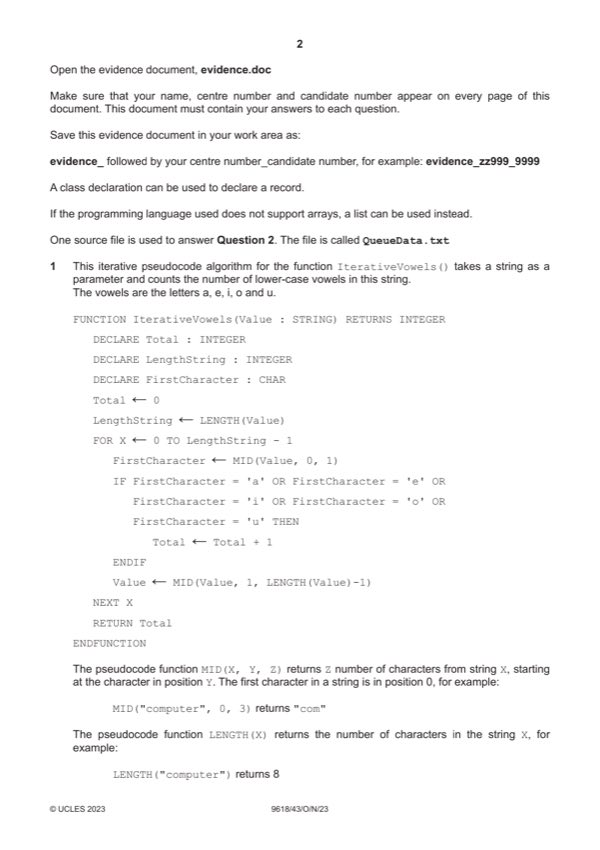

Question 1

Original paper page 2
Part 1(a)(i) — solution
- Function header (and end where appropriate) taking one string parameter
- Calculating length of parameter string
- Looping correct number of times
- Checking the first character against all vowels
- Accessing the remainder of the string
- Remainder of function correct with nothing extra i.e. totalling, must match structure of given algorithm
Visual Basic (VB.NET)
Function IterativeVowels(Value)
Dim Total As Integer = 0
Dim FirstCharacter As Char
For x = 0 To Len(Value) - 1
FirstCharacter = Left(Value, 1)
If FirstCharacter = "a" Or FirstCharacter = "e" Or FirstCharacter = "i" Or FirstCharacter = "o" Or
FirstCharacter = "u" Then
Total = Total + 1
End If
Value = Right(Value, Len(Value) - 1)
Next
Return Total
End Function
2023 Page 5 of 37
9618/43 Cambridge International AS & A Level – Mark Scheme October/November 2023
Python
def IterativeVowels(Value):
Total = 0
for X in range(0, len(Value)):
FirstCharacter = Value[0]
if FirstCharacter == 'a' or FirstCharacter == 'e' or FirstCharacter == 'i' or FirstCharacter == 'o'
or FirstCharacter == 'u':
Total = Total + 1
Value = Value[1:len(Value)]
return Total
Mark points
- Function header (and end where appropriate) taking one string parameter
- Calculating length of parameter string
- Looping correct number of times
- Checking the first character against all vowels
- Accessing the remainder of the string
- Remainder of function correct with nothing extra i.e. totalling, must match structure of given algorithm
Part 1(a)(ii) — solution
- Calling the function with "house"
- Outputting the return value
Visual Basic (VB.NET)
Console.WriteLine(IterativeVowels("house"))
Python
print(IterativeVowels("house"))
Mark points
- Calling the function with "house"
- Outputting the return value
Part 1(a)(iii) — solution
One mark for screenshot outputting 3 1
Mark points
- Include the ideas shown in the solution above.
Part 1(b)(i) — solution
- Recursive call
- Function header (and end where appropriate) taking string parameter (returning integer where given)
- Base case checking (length is 0) and returning 0
- Extracting first character and checking if a vowel …
- … if it is a vowel, returning 1 + recursive call with 1 less character
- … if not a vowel, return recursive call with 1 less character
Visual Basic (VB.NET)
Function RecursiveVowels(Value)
Dim firstCharacter As Char
If Len(Value) = 0 Then
Return 0
Else
firstCharacter = Left(Value, 1)
If firstCharacter = "a" Or firstCharacter = "e" Or firstCharacter = "i" Or firstCharacter = "o" Or
firstCharacter = "u" Then
Return 1 + RecursiveVowels(Right(Value, Len(Value) - 1))
Else
Return RecursiveVowels(Right(Value, Len(Value) - 1))
2023 Page 7 of 37
9618/43 Cambridge International AS & A Level – Mark Scheme October/November 2023
End If
End If
End Function
Python
def RecursiveVowels(Value):
if len(Value) == 0:
return 0
else:
FirstCharacter = Value[0]
if FirstCharacter == 'a' or FirstCharacter == 'e' or FirstCharacter == 'i' or FirstCharacter == 'o' or
FirstCharacter == 'u':
return 1 + RecursiveVowels(Value[1:len(Value)])
else:
return RecursiveVowels(Value[1:len(Value)])
Mark points
- Recursive call
- Function header (and end where appropriate) taking string parameter (returning integer where given)
- Base case checking (length is 0) and returning 0
- Extracting first character and checking if a vowel …
- … if it is a vowel, returning 1 + recursive call with 1 less character
- … if not a vowel, return recursive call with 1 less character
Part 1(b)(ii) — solution
One mark for calling recursive function with "imagine" and outputting return value 1
Example program code:
VB.NET
Console.WriteLine(RecursiveVowels("imagine"))
Python
print(RecursiveVowels("imagine"))
Visual Basic (VB.NET)
Console.WriteLine(RecursiveVowels("imagine"))
Python
print(RecursiveVowels("imagine"))
Mark points
- Include the ideas shown in the solution above.
Part 1(b)(iii) — solution
One mark for screenshot showing 4 1
2023 Page 8 of 37
9618/43 Cambridge International AS & A Level – Mark Scheme October/November 2023
Mark points
- Include the ideas shown in the solution above.